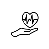

Cuando te atendés con profesionales de la salud, estás en buenas manos
Nos enfocamos en ofrecer tratamientos personalizados y de calidad para nuestros pacientes. La licenciada María Marta Lafranconi, altamente capacitada y con amplia experiencia en el campo de la kinesiología y la fisiatría, ofrece una amplia variedad de servicios, desde rehabilitación hasta drenaje linfático manual, siempre adaptados a las necesidades y objetivos de cada paciente.
Nos enorgullece ofrecer un ambiente cálido y acogedor en nuestras modernas instalaciones, donde nuestros pacientes se sienten cómodos y seguros en todo momento. Si buscas kinesiólogos comprometidos con tu bienestar físico y emocional, ¡No dudes en visitarnos!
40 años de experiencia
